Friends, Fluency, and a Laminated List — Learning English with “The One With Frank Jr.”
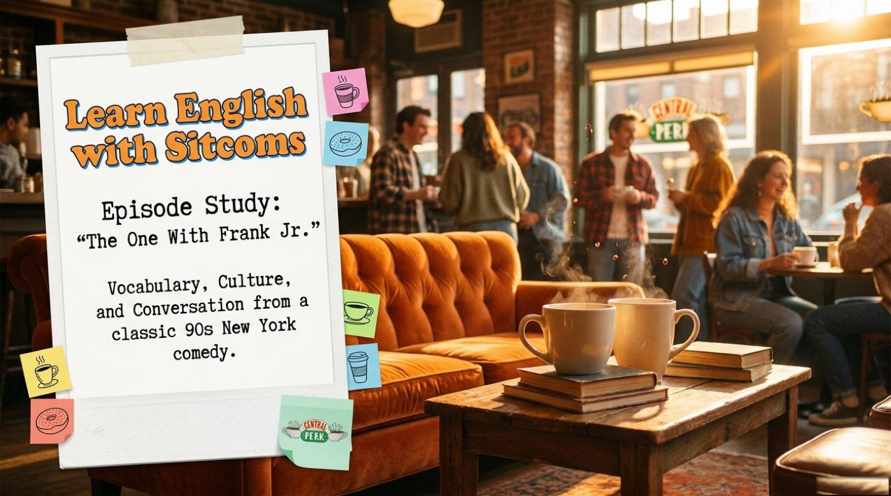
A single half-hour of Friends can teach more living English than most textbooks do in a week — and the lesson captured here proves it. The Gemini Notebook study pack breaks down “The One With Frank Jr.” into three storylines, a handful of everyday idioms, three sharp phrasal verbs, and one quietly powerful grammar structure for imaginary situations.
It is worth noticing that sitcom English works because it is English under pressure. Characters interrupt, joke, backtrack, and misunderstand each other at native speed, which means every line carries pronunciation, idiom, and culture all at once. This lesson, structured around a Gemini Notebook slide deck, is built to convert that chaos into something a learner can actually hold on to. The pages that follow walk through the storylines, lift out the vocabulary, point at the deeper metaphors, and then offer a short comprehension check to make sure the new language has truly landed.
1 Content and Context
The episode study is organized as a clean triptych. Three short storylines run in parallel, each one a tiny lesson in how ordinary people talk when they are embarrassed, ambitious, or desperately trying to plan for romance. The opening slide summarizes them plainly: “The Brother,” “The Builder,” and “The List.” Each label is a teaching handle — a one-word way to remember a longer narrative.
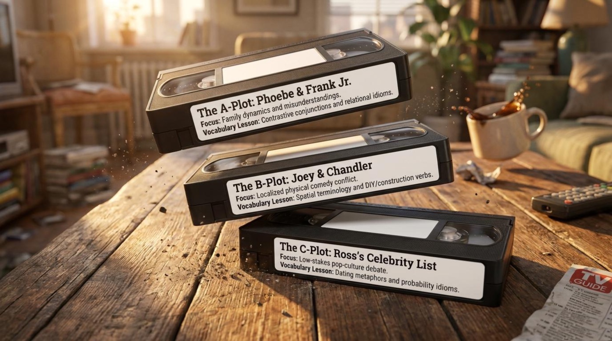
The first storyline, summarized on the slide as “The Brother,” follows Phoebe as she tries to bond with her newly discovered half-brother Frank Jr. The deck frames it bluntly: “Phoebe tries to bond with her half-brother, Frank Jr., but struggles to find common ground beyond melting things.” That final phrase — beyond melting things — is more than a joke. It captures the precise language-learning idea that connection often fails at the surface and only works once two people discover a shared, slightly strange common ground.
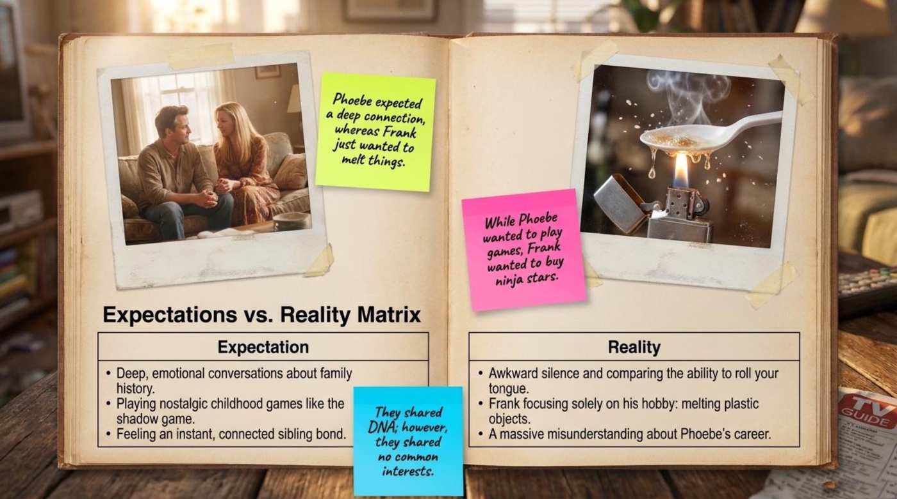
The deck structures Phoebe and Frank’s storyline as a four-beat mini-arc. The Goal is “Phoebe wants a 'big sisterly' connection with her newly discovered brother.” The Problem is that “they have nothing in common (she can't roll her tongue; he loves melting plastic).” The Climax lands when “Frank misunderstands Phoebe's massage job, thinking it's a front for inappropriate work, and tries to hit on her coworker.” The Resolution is that “they finally bond over their mutual misunderstanding and a shared appreciation for their 'great talks'.” The structure itself is a study aid — Goal, Problem, Climax, Resolution is a template learners can reuse to summarize any narrative episode in clean English.
The second storyline, “The Builder,” is the one that has aged best as a metaphor for runaway DIY ambition. The summary slide states that “Joey decides to build a small mailbox but accidentally constructs a massive wooden entertainment unit that ruins Chandler's life.” The escalation is comedic, but the lesson is linguistic: English has dozens of verbs for construction going wrong, and this single story thread collects several of them.
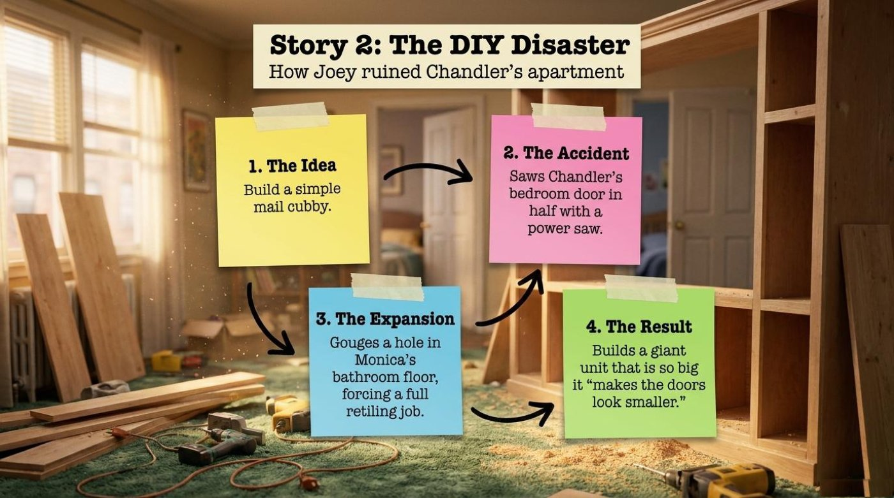
The DIY storyline is broken into four crisp stages that read like a recipe for catastrophe. “1. The Idea — Build a simple mail cubby. 2. The Accident — Saws Chandler's bedroom door in half with a power saw. 3. The Expansion — Gouges a hole in Monica's bathroom floor, forcing a full retiling job. 4. The Result — Builds a giant unit that is so big it 'makes the doors look smaller.'” Each stage is a complete sentence, and each sentence is a model of how to narrate escalating disaster in clear, vivid English.
The third storyline, “The List,” is the most linguistically rich. The summary slide reads: “Ross creates a laminated list of 5 celebrities he is allowed to date, but makes a crucial mistake when he meets one in real life.” That word laminated is doing real work — it tells the reader this list is sealed in plastic, treated as permanent, almost legal. The mistake, of course, is that Ross removes the one celebrity who actually walks into his coffee shop.
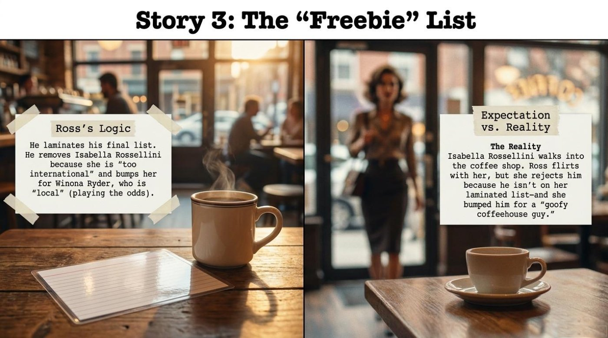
The slide frames Ross’s reasoning with surgical clarity. “He laminates his final list. He removes Isabella Rossellini because she is 'too international' and bumps her for Winona Ryder, who is 'local' (playing the odds).” The phrase playing the odds appears here as both Ross’s stated strategy and as the vocabulary item the slide will later teach. The reality half of the slide is the punchline: “Isabella Rossellini walks into the coffee shop. Ross flirts with her, but she rejects him because he isn't on her laminated list — and she bumped him for a 'goofy coffeehouse guy.'” The comedy is perfectly mirrored: Ross bumps Isabella for being too international, and Isabella bumps Ross for being too goofy. The deck uses that mirror structure as a teaching device — the same verb, bump, applied in two directions.
2 Vocabulary and Language Takeaways
The lesson isolates two layers of vocabulary: a set of everyday idioms used by native speakers without thinking, and a tighter set of phrasal verbs — those stubborn little verb-plus-particle combinations that make English sound like English rather than translated English. Each item is anchored to a direct quote from the episode script, which is the move that turns a vocabulary list into something memorable.
📚 Idioms from the Episode
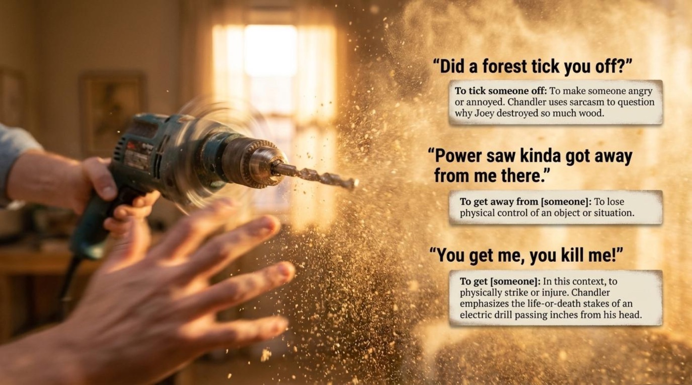
📌 Phrasal Verbs from the Script
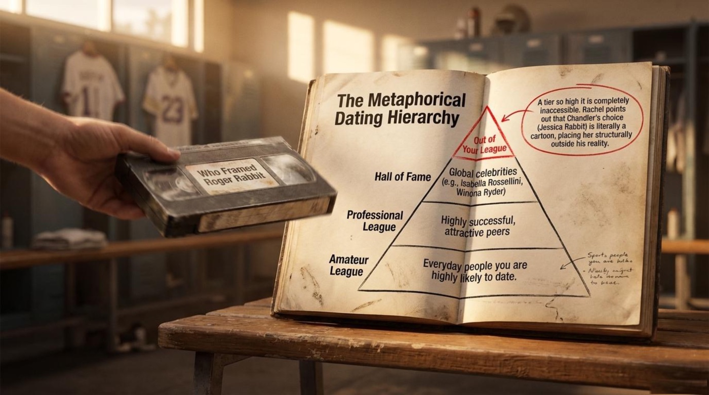
💡 Grammar Spotlight — The Second Conditional
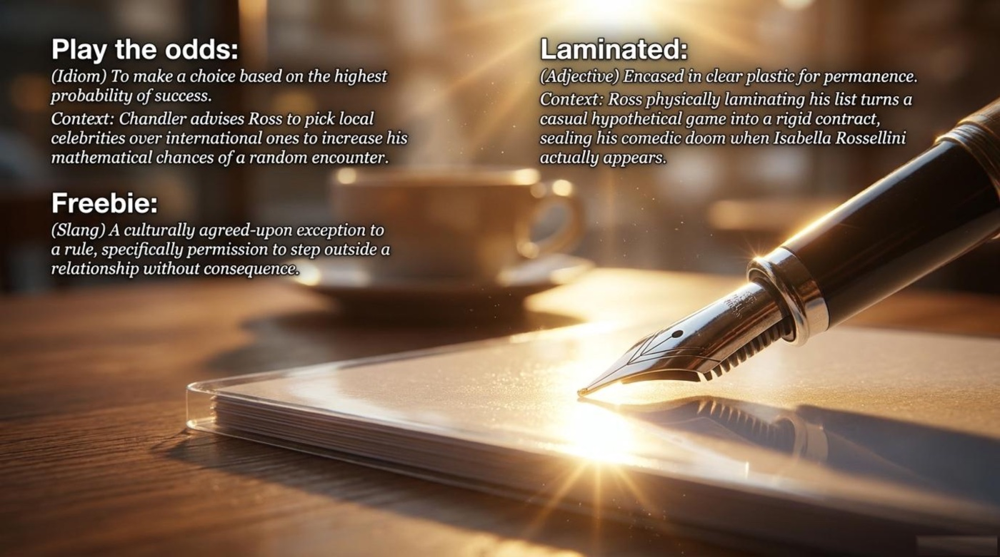
The grammar spotlight slide is short and direct. “The characters use the Second Conditional to talk about imaginary situations (like dating celebrities). Rule: If + past tense, would + base verb.” The deck offers two episode examples: “Who would be on your list?” and “She wouldn't let you do it unless you donated food first.” Both examples are perfectly chosen — they show the structure in the wild, not in a workbook.
It is important to understand that the Second Conditional is the grammar of hypotheticals. Every celebrity list, every “if I had a million dollars,” every “if I were you” lives in this structure. The episode’s freebie-list conversation is essentially a long Second Conditional exercise disguised as a joke, which is exactly the kind of context that makes the rule memorable.
🔄 Interactive Flip-Cards — Click Each Card to Flip
The six vocabulary items above are collected into a set of interactive flip-cards below. Each card shows the term on the front, with its part of speech and a short hook. Click any card — or press Enter on a focused card — to flip it over and read the literal meaning, the contextual meaning, an example from the episode, and a short note on why the word matters.
3 Deeper Meaning — Metaphors and Symbols
Beneath the jokes, the episode is built around three or four small symbols that do real narrative work. The Gemini Notebook lesson does not flag them explicitly, but they are visible in the structure of the slides — and naming them helps a learner see how English speakers use objects to carry abstract meaning.
🔖 Symbol 1 — The Laminated List
The laminated list is the central metaphor of the episode. Ross does not merely write down five celebrity names; he laminates the list, treating it as something sealed, official, almost contractual. The slide’s wording is exact: “He laminates his final list.” That single verb — laminates — turns a casual fantasy into a piece of paperwork. The comedy of the episode comes from the gap between the permanence Ross has imposed on the list and the casualness with which reality overrides it: the celebrity he removed walks into his coffee shop minutes after the lamination.
The deeper lesson is that English speakers constantly use material metaphors to express abstract ideas. A list can be final, draft, short, bucket, or — as here — laminated. Each adjective changes the weight of the object. A laminated list is permanent. A short list is selective. A bucket list is existential. Learning to hear those shades is part of learning the language.
🔥 Symbol 2 — Melting Plastic
The phrase appears in the first storyline: Phoebe and Frank Jr. “struggle to find common ground beyond melting things.” Melting plastic is grotesque and funny, but it is also a precise symbol for the strange, slightly off-bond that forms between half-siblings who have just met. They cannot bond through shared childhood memories or family traditions, so they bond through the weirdest habit they happen to share — melting spoons, melting action figures, melting whatever is at hand.
The slide uses the phrase almost in passing, but it is the emotional hinge of the entire storyline. It is worth noticing that the writers could have given Phoebe and Frank a more conventional shared interest — a love of music, say, or a similar sense of humor — and instead gave them something pointedly odd. The choice tells the viewer that family bonds do not need to be respectable to be real.
🚪 Symbol 3 — The Sawed-Off Door
The image of Chandler’s bedroom door sawed in half by a runaway power saw is the visual punchline of the DIY storyline. The slide describes it crisply: “Saws Chandler's bedroom door in half with a power saw.” The door is a metonym for Chandler’s apartment, his privacy, his entire life — all of it rearranged without his consent by Joey’s ambition. The sawed-off door is what ambition looks like when it has no craft behind it.
For an English learner, the doorway is also a vocabulary object. Door, doorframe, doorway, threshold, hinge — English has a surprisingly large lexicon for the architecture of an entrance, and almost all of it carries figurative meaning. Closing a door means ending something. Opening a door means opportunity. Sawing a door in half means a friendship that survives a catastrophe.
☕ Symbol 4 — Central Perk
The coffee shop that frames the entire series is the silent fourth symbol of this episode. The opening slide of the deck names it explicitly — “CENTRAL PERK” — as the stage where Ross’s celebrity fantasy collapses. The shop is the place where plans meet reality. Ross has his laminated list; Isabella Rossellini walks into Central Perk; the list is immediately meaningless.
For learners, the coffee shop setting is also a vocabulary cluster: order, tab, regular, barista, corner table, to go. The episode uses several of these in passing. Paying attention to the language of small everyday spaces — the café, the apartment, the kitchen — is one of the fastest ways to absorb natural English.
4 Comprehension Check
The lesson’s original comprehension section is split across two slides — a True/False set and a short-answer set — followed by an answer key. The first batch checks whether the storyline details landed. The second batch asks the reader to recall character motivations. The answer key, set out plainly on its own slide, gives the corrections. The interactive quiz below bundles all three layers into a single self-checking component.
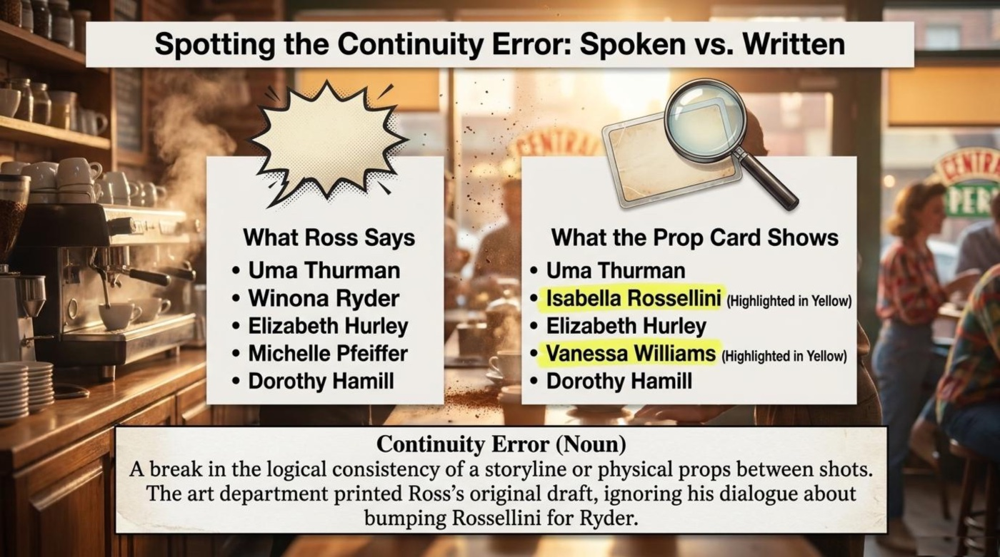
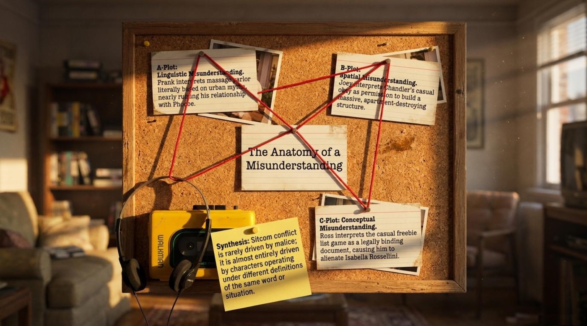
The interactive quiz below is built directly from the lesson’s comprehension slides. Each question gives instant feedback — the correct option is highlighted in green, the wrong one in red and shakes briefly, and a short explanation appears underneath. A live score, a row of progress dots, and a small floating reaction above the quiz bar track every answer. The quiz can be taken with a mouse or fully with the keyboard.
Once the quiz is complete, it is worth cross-checking the answers against the deck’s own answer key. The slide below restates the corrections in the deck’s own words — a useful way to see how the lesson’s author frames each answer in plain, quotable English.
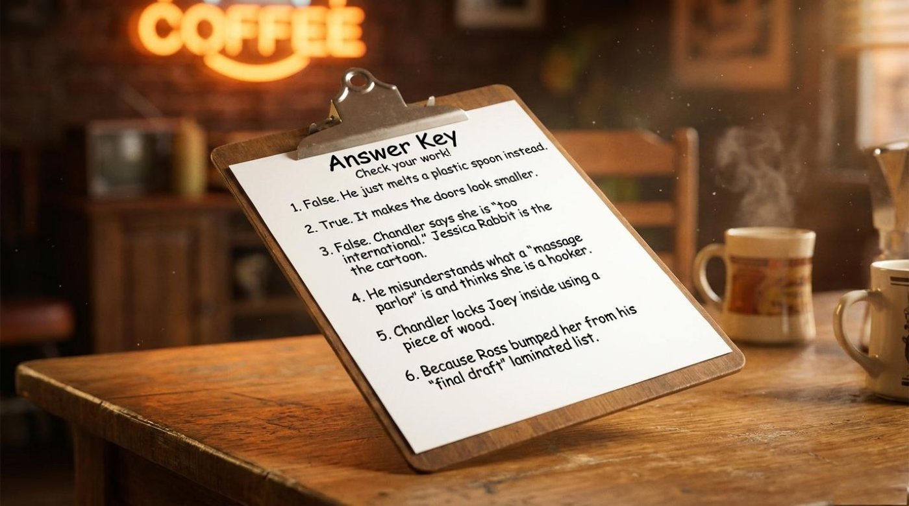
5 Conclusion
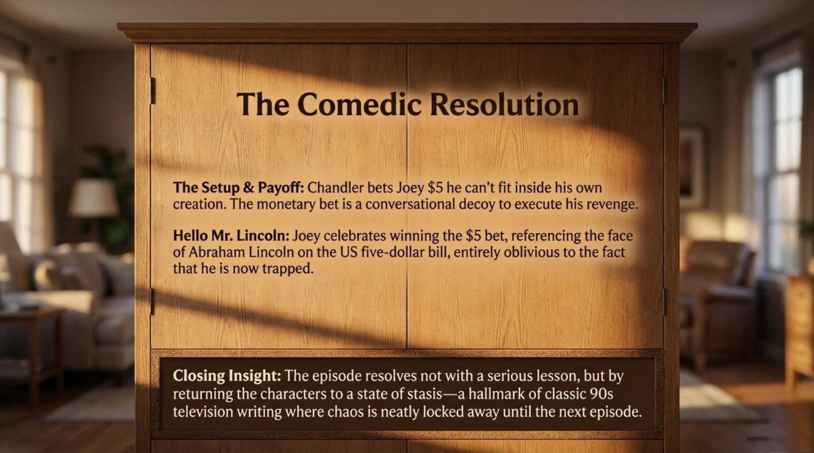
The closing slide of the deck hands the lesson back to the reader. Its three prompts — about a DIY disaster, a coffee-shop annoyance, and a personal celebrity list — are an invitation to use the vocabulary in a real conversation. The most powerful moment in the entire study pack is the slide’s quiet use of the Second Conditional: “If you could have a coffee with any 5 famous people, who would be on your list and why?” The grammar spotlight from earlier in the lesson comes alive in that single sentence — could in the if-clause, would in the main clause — and the learner has just been handed a question they can actually answer.
The main takeaway for language learners is that episode-based study works because it bundles grammar, vocabulary, and culture into a single memorable frame. “The One With Frank Jr.” teaches six vocabulary items, three narrative structures, and one grammar rule for imaginary situations — and it does it in twenty-two minutes. The call to action is simple: rewatch the episode with the new vocabulary in hand, then have the conversation the closing slide asks for. Build a list of your own. Try to laminate it. Notice what happens when reality bumps someone off.